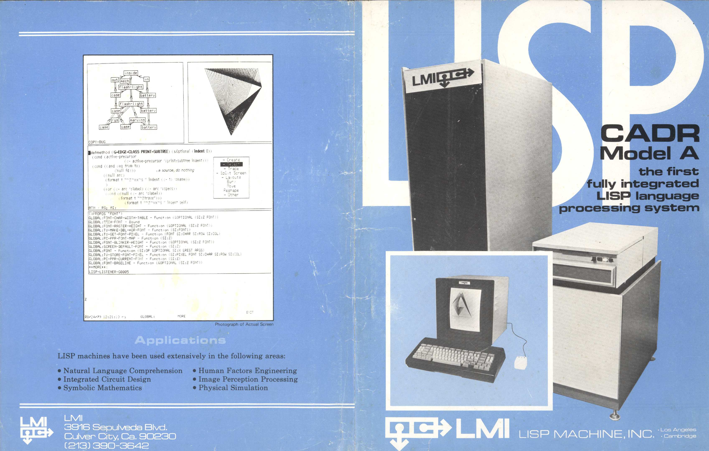
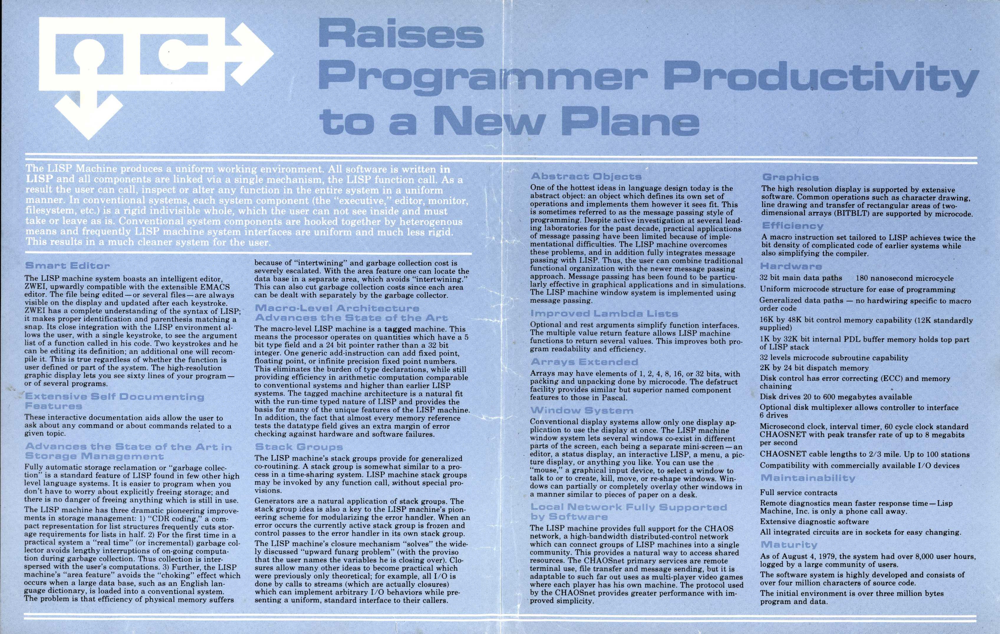
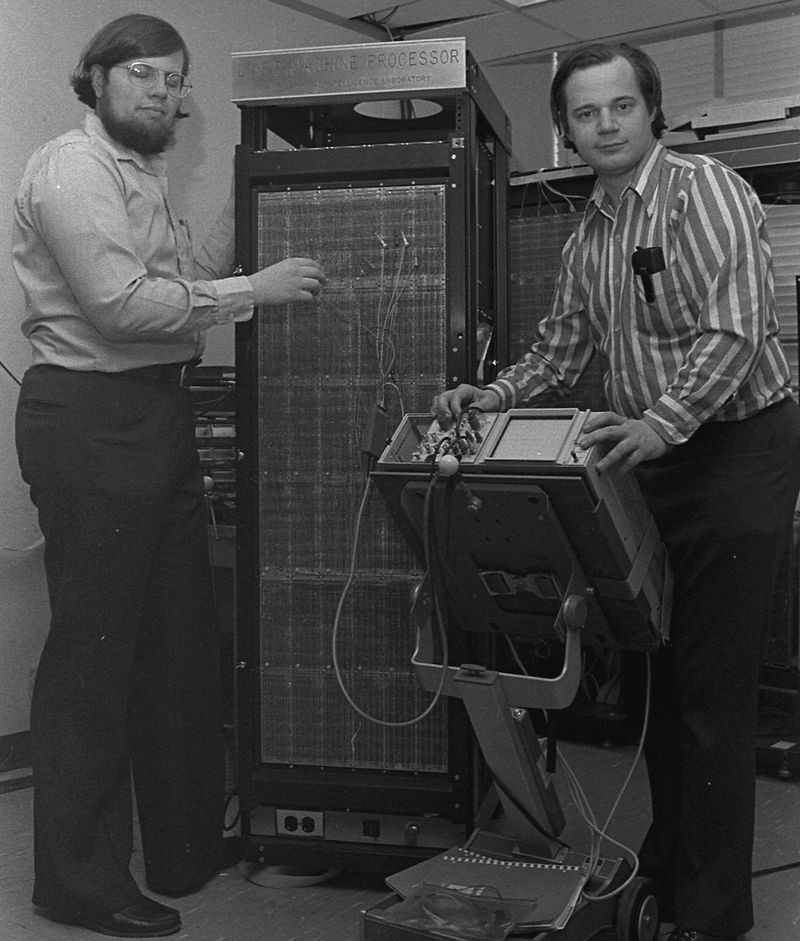
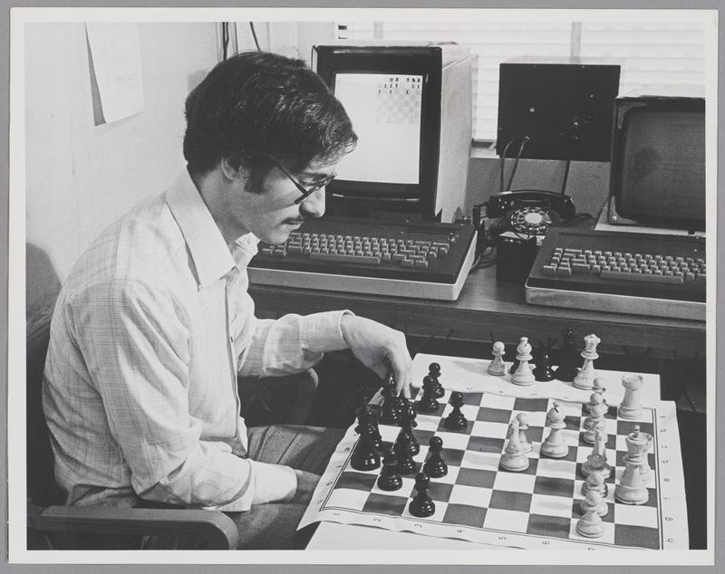
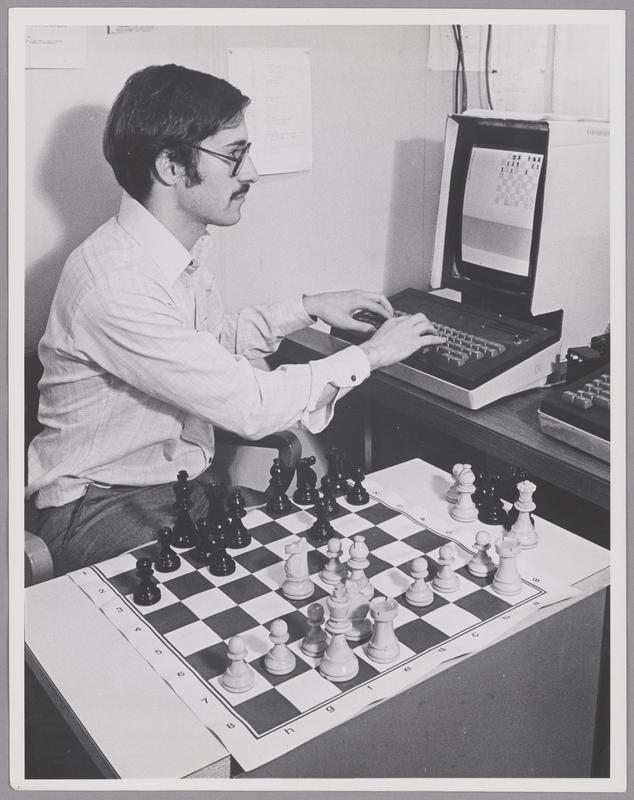

Original: http://bitsavers.trailing-edge.com/pdf/mit/cadr/CADR_brochure1.jpg, http://bitsavers.trailing-edge.com/pdf/mit/cadr/CADR_brochure2.jpg.

Original: https://www.computerhistory.org/chess/stl-431614f64ea3e/.


Photograph from MIT (pictures #4 and #59 from https://mitmuseum.mit.edu/collections/subject/computers-general-people-working-on-computers-2080
Please send questions or bug reports to BUG-LISPM.
Last modified: 2023/01/16 09:07:39 (UTC) by ams